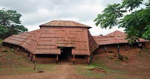

Danxomè
Royaume célèbre pour son organisation, ses palais royaux et son influence historique.
Des royaumes puissants ont façonné l’histoire du Bénin, ses arts, ses institutions, ses palais et ses traditions politiques.
Quelques royaumes majeurs à découvrir.
Royaume célèbre pour son organisation, ses palais royaux et son influence historique.

Centre important de l’histoire bariba, associé à la royauté et aux traditions du nord.

Royaume yoruba ancien, riche en traditions, en récits de fondation et en patrimoine.

Ancien royaume de Porto-Novo, marqué par les échanges, les chefferies et les palais.
Les royaumes sont une porte d’entrée vers l’histoire politique, artistique et sociale du Bénin.
Retour à Découvrez